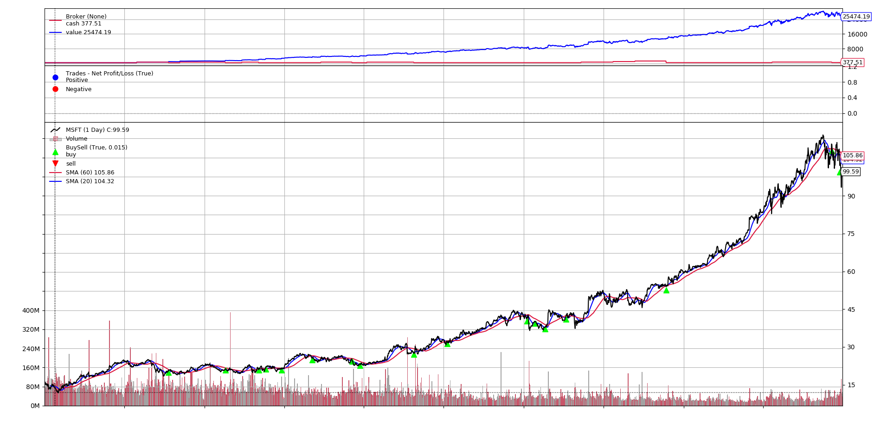

Python 回測框架（三）技術指標
出處:https://stockbuzzai.wordpress.com/2019/07/10/python-%e5%9b%9e%e6%b8%ac%e6%a1%86%e6%9e%b6%ef%bc%88%e4%b8%89%ef%bc%89%e6%8a%80%e8%a1%93%e6%8c%87%e6%a8%99/
延續之前的內容，這次要利用最頻繁被使用的技術指標之一 – 日均線 (Moving Average) 作為我們策略的篩選條件。
在投資策略上，技術指標是一個很常被用到的工具。透過技術指標，我們可以比較容易地分析商品或是大盤的趨勢。在這個範例之中，我們將使用 20 日均線和 60 日均線做為我們買賣的參考。當商品 (MSFT) 的開盤價低於 60 日均線同時 20 均線又呈現上漲趨勢的時候，我們才買入商品。
data = backtrader.feeds.YahooFinanceData(dataname='MSFT',
fromdate=datetime(2009, 1, 1),
todate=datetime(2018, 12, 31))
雖然我們是從 2010 年才開始交易，但是因為我們有需要 60 天均線和 20 天均線的資料，因此我們必須至少多載入 60 個交易日以上的資料來提供系統計算均線。
def __init__(self):
self.next_buy_date = datetime(2010, 1, 1)
self.sma60 = backtrader.ind.SMA(period=60)
self.sma20 = backtrader.ind.SMA(period=20)
self.total_cash = 0
在初始化的過程中，我們產生了兩個均線變數，sma20 和 sma60。同時我們產生一個變數 total_cash 來統計我們到底投入的多少資金。next_buy_day則是控制不要短期內連續買入。
current_date = self.data.datetime.date()
if current_date >= self.next_buy_date.date():
if self.data.close < self.sma60[0] and self.sma20[0] > self.sma20[-1]:
price = (self.data.high + self.data.low) / 2.0
volume = math.floor((self.broker.cash) / price)
self.buy(size=volume)
self.broker.add_cash(cash=300)
self.total_cash += 300
self.next_buy_date = datetime.combine(current_date, datetime.min.time()) + relativedelta(months=1)
首先，if current_date >= self.next_buy_date.date(): 這一行判斷了是否今天是可以交易的日子。self.data.close < self.sma60[0] 則判斷了今日的開盤價是否高於 60 日均線。self.sma20[0] > self.sma20[-1] 這一行則判斷今日的 20 日均線值是否比昨天高，用來判斷20 天均線是否在上升的狀態。
當這兩個條件都成立，則買入。
根據程式回測的結果，我們只需要投入 7800 元，9 年後微軟的淨值就會成為 25474，大約賺了250% 以上。
微軟 (MSFT)
＿＿＿
完整程式碼
from datetime import datetime
from dateutil.relativedelta import relativedelta
import backtrader
import math
class TestStrategy(backtrader.Strategy):
def __init__(self):
self.next_buy_date = datetime(2010, 1, 1)
self.sma60 = backtrader.ind.SMA(period=60)
self.sma20 = backtrader.ind.SMA(period=20)
self.total_cash = 0
def next(self):
current_date = self.data.datetime.date()
if current_date >= self.next_buy_date.date():
if self.data.close < self.sma60[0] and self.sma20[0] > self.sma20[-1]:
price = (self.data.high + self.data.low) / 2.0
volume = math.floor((self.broker.cash) / price)
self.buy(size=volume)
self.broker.add_cash(cash=300)
self.total_cash += 300
self.next_buy_date = datetime.combine(current_date, datetime.min.time()) + relativedelta(months=1)
def stop(self):
print(self.total_cash)
cerebro = backtrader.Cerebro()
data = backtrader.feeds.YahooFinanceData(dataname='MSFT',
fromdate=datetime(2009, 1, 1),
todate=datetime(2018, 12, 31))
cerebro.adddata(data)
cerebro.addstrategy(TestStrategy)
cerebro.broker.set_cash(cash=300)
cerebro.run()
cerebro.plot()